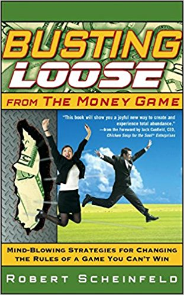

Michael Arizola
Interactive Producer
I enjoy learning how to cook, traveling, eating out, anything web related from SEO to getsing Chomp...
I run a small agency out of LA. Long Beach California to be exact.

Busting Loose from the Money Game
Great book on How to get out of the money game, and focus on your passion. Book deals heavily with Quantum Physics and how life can seem like an illustion some times. Many jewels are dropped in this one, and is a must read for those who want a new outlook on life when times seem dire.PyschoCybernetics
Written by Plastic surgeon who spent years fixing faces. One issue many people have had after surgery was still having the same feelings towards themselves before the surgery. These feelings would typically be on not feeling insufficient in some way shape or form due to their issues with their looks. The author would help patients reprogram their mind so they would feel better about themselves and enjoy who they are with or without plastic surgeryThink and Grow Rich
Classic Book from Napolean Hill. He was commissioned by Andrew Carnegie to study why some people are rich and why some people are poor. This book has supposedly made more millionaires than any other book.